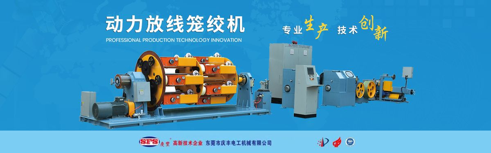
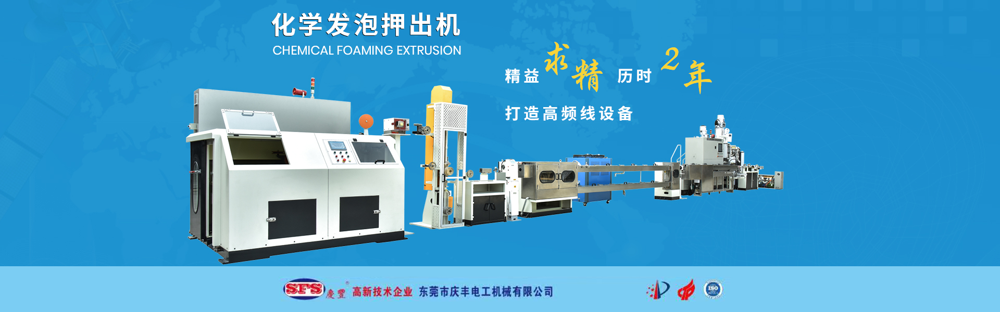
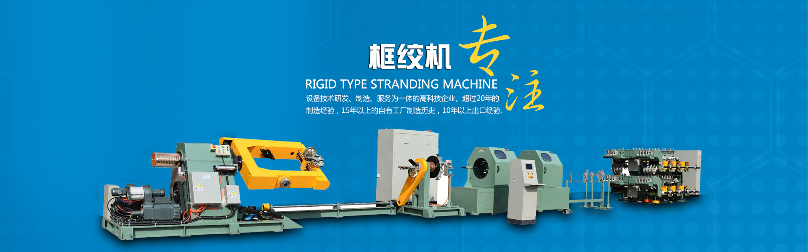

About Us
Dedication makes us professional; quality wins us trust.

Company Profile
Dongguan Qingfeng Electrical Machinery Co., Ltd. was established in 2000. We are a high-tech enterprise that, on a global scale and over the long term, has been dedicated to the R&D, manufacturing and service of wire, cable and optical fiber cable equipment. We provide ideal solutions based on customers' special requirements, and offer corresponding professional technical solutions according to the cable structure and actual process requirements.
As one of China's outstanding cable equipment manufacturers, the company operates both domestic and international sales teams, along with R&D, production and manufacturing, quality inspection centers and an independent after-sales service department, delivering comprehensive pre-sales, in-sales and after-sales services to customers.
The company currently comprises several affiliated enterprises, including Qingfeng Electrical Technology (Hong Kong) Co., Ltd., Dongguan Shatian Shengfeng Electrical Machinery Factory and Kunshan Fengsheng Electrical Machinery Co., Ltd. Our in-house factory covers 9,000 square meters, fixed assets exceed RMB 15 million, and we employ over 90 people, including 12 technical staff, equipped with advanced processing machinery such as large CNC lathes and milling-boring machining centers.
Corporate Strength
Over two decades of expertise, proven by the numbers
Development History
Step by step, we witness over two decades of the company's growth and transformation
Company Founded
Dongguan Qingfeng Electrical Machinery Co., Ltd. was officially established, focusing on the manufacturing and service of wire and cable equipment.
Accumulated Manufacturing Expertise
With more than two decades of deep experience in the cable equipment industry, our craftsmanship and quality have continued to advance, building complete manufacturing and service capabilities.
In-House Factory Manufacturing
Through our own factory buildings and large CNC lathes and milling-boring machining centers, we independently machine and manufacture key core components.
Exporting to Global Markets
An international sales team was formed to expand overseas markets, and our products now reach over 30 countries and regions worldwide.
Serving Global Customers
Our coordinated domestic and international sales teams provide global customers with a complete range of pre-sales, in-sales and after-sales services.
High-Tech Enterprise Certification
We have received dozens of national patents and provincial and municipal science and technology progress awards, and our key products have been recommended by the China Electrical Equipment Industry Association as products of trustworthy quality.
Certifications and Honors
Our professionalism and strength have earned high recognition from the industry and the market
High-Tech Enterprise
Certified as a high-tech enterprise, we continue to increase R&D investment to maintain our technological edge.
National Patents and Science & Technology Progress Awards
Focused on research and innovation in wires and cables, we have won dozens of national patents and provincial and municipal science and technology progress awards.
Trustworthy-Quality Products
All our main products have been recommended by the China Electrical Equipment Industry Association as products of trustworthy quality, earning customers' confidence.
Manufacturing Capability
Advanced processing equipment ensures high-precision manufacturing of key components

Large CNC Lathes and Milling-Boring Machining Centers
High-precision processing equipment for the precision manufacturing of core components.

Independent Quality Inspection Center
Full-process quality inspection ensures that every machine meets quality standards.

Independent After-Sales Service Department
Providing a full range of pre-sales, in-sales and after-sales services to ensure the long-term, stable operation of the equipment.
Working Hand in Hand, Growing Together
As always, we will provide the highest quality services to all customers and work together with them to create a brighter future.
Contact Us